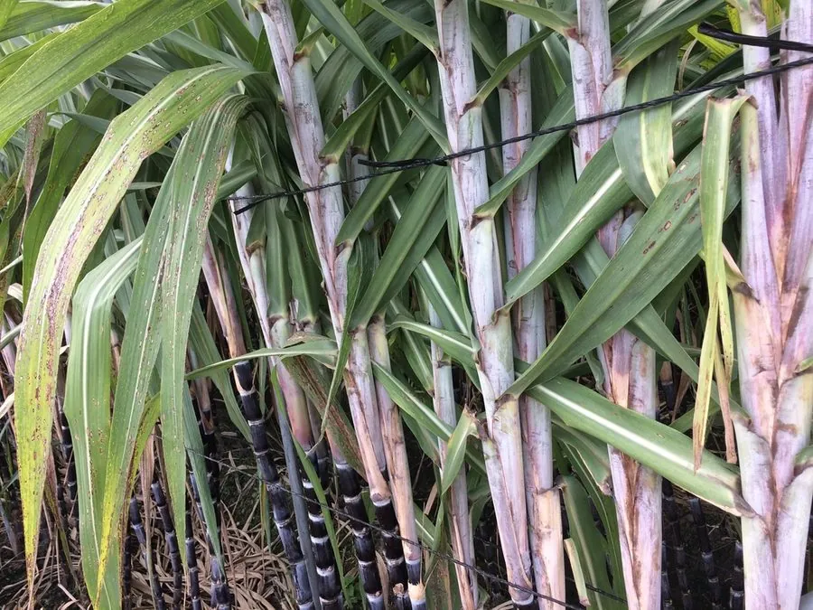

农作物与经济植物 · 植物界
甘蔗 Saccharum officinarum

甘蔗的茎秆富含蔗糖，是制糖和乙醇燃料的重要原料，栽培历史可追溯数千年，是典型的热带经济作物。
- 分类
- 门被子植物门纲单子叶植物纲目禾本目科禾本科属甘蔗属
- 栖息环境
- 热带、亚热带平原，喜高温、强光与充足水分
- 地理分布
- 原产新几内亚与南亚，现主产于巴西、印度、中国南方
- 保护级别
- 暂无评估（栽培作物）
物种志
甘蔗是禾本科多年生高大草本，株高 2–4 m，茎秆粗壮、实心，有节，节上着生芽，表面常被白色蜡粉，颜色有绿、黄、紫红等。叶片长披针形，边缘有锋利的锯齿，需小心触碰。茎秆内富含汁液，含糖量可达 12%–16%。甘蔗很少开花，开花时会抽出顶生的圆锥花序。生产上通常用茎段（种苗）无性繁殖，每段保留 2–3 个芽。
甘蔗原产新几内亚与南亚一带，约 8000 年前已被当地人栽培，后经印度传入中国，成为重要的制糖原料，古代蔗糖曾是中国出口的大宗商品。它喜高温、强光和充足水分，适宜在热带、亚热带地区栽培。甘蔗压榨出的汁液可熬制成蔗糖，副产品糖蜜可发酵生产酒精，蔗渣可造纸、发电和作饲料；甘蔗乙醇也是重要的生物燃料。巴西、印度和中国是主要生产国。
形态与习性
- 株高2–4 m，茎秆粗壮实心
- 茎有节，含糖量 12%–16%
- 叶长披针形，边缘有锋利锯齿
- 繁殖用茎段无性繁殖
- 主要用途制糖、乙醇与蔗渣利用
- 原产地新几内亚与南亚一带
- 适宜气候高温多雨
趣味知识
- 甘蔗的茎是实心的，含糖量高的品种汁水清甜。
- 蔗渣过去被当废料，如今可用来发电、造纸和制板材。
- 全球约八成食糖来自甘蔗和甜菜，甘蔗是其中的主力。